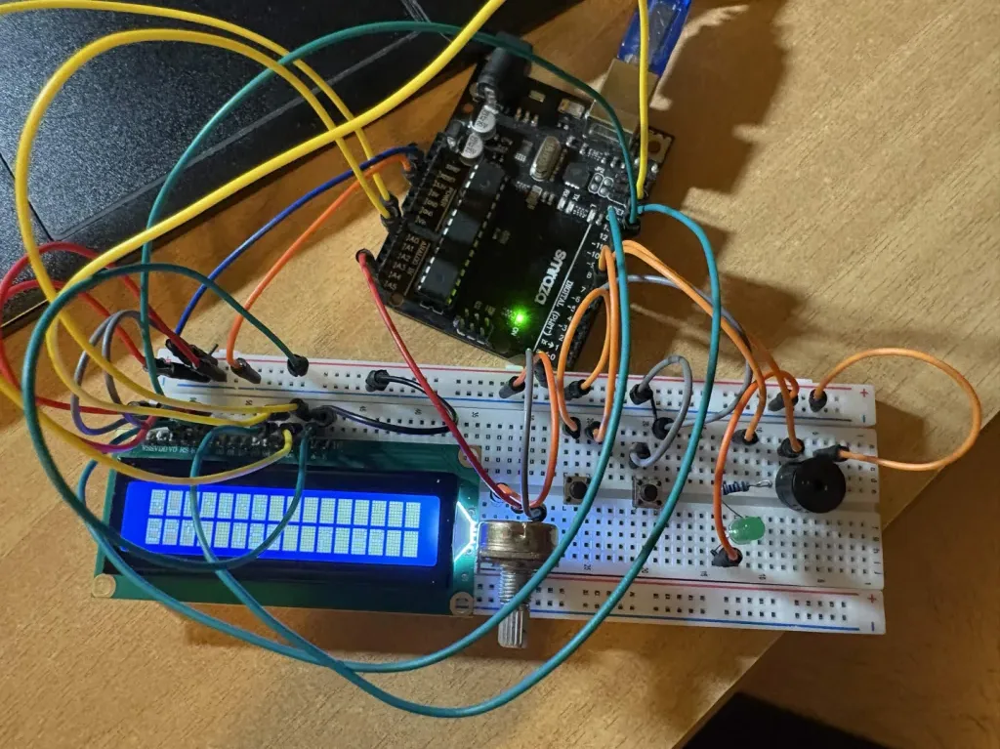

IMD Test Box
Designed an IMD test box for UW Formula Electric to simulate PASS, WARNING, TECH FAIL, and hard short conditions for FSAE high voltage safety verification.
Open projectHonours Electrical Engineering (Co‑op), University of Waterloo
Seeking a Winter 2027 internship
See the projectsDesigned an IMD test box for UW Formula Electric to simulate PASS, WARNING, TECH FAIL, and hard short conditions for FSAE high voltage safety verification.
Open projectDesigned a 10–15V to 5V, 1A DC-DC buck converter using an LT1375 switching regulator, with a 41.4 × 23.6 mm two layer SMD PCB in Altium Designer.
Open projectDesigned and programmed an embedded digital metronome in C++ using an Arduino UNO, with adjustable 40–180 BPM, potentiometer control, push button inputs, and a 16×2 LCD. Try the browser edition inside the project.
Open projectTeams and work
Education
Tools

Hi, I'm Morgan! I'm an Electrical Engineering student at the University of Waterloo. I'm interested in hardware, firmware and software, and I'm on the electrical and firmware team at UW Formula Electric. Outside of engineering, I play saxophone and have coached badminton.
Send me a message: type your email and message in the boxes below, then press Send.